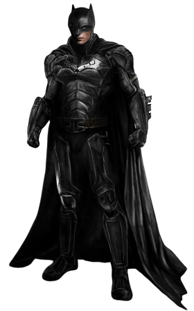

A superhero is a person who does heroic deeds and has the ability to do them in a way that a normal person couldn’t. So in order to be a superhero, need a power that is more exceptional than any power a normal human being could possess , and you need to use that power to accomplish good deeds. Otherwise, a policeman or a fireman could be considered a superhero. For instance, a good guy fighting a bad guy could be just a regular police story or detective story or human-interest story. But if it’s a good guy with a superpower who is fighting a bad guy, it becomes a superhero story. If the good guy is doing something that a normal human being couldn’t do, couldn’t accomplish, then I assume he becomes a superhero.
Article on superheroes at OUR Blog

Batman
Batman is a superhero who appears in American comic books published by DC Comics. Batman was created by artist Bob Kane and writer Bill Finger, and debuted in the 27th issue of the comic book Detective Comics on March 30, 1939. In the DC Universe continuity, Batman is the alias of Bruce Wayne, a wealthy American playboy, philanthropist
Anchor to the "What makes a superhero?"